Code
library(TSA)Based on Chapter 3, Cryer and Chan
Time series are often decomposed into components: deterministic and stochastic. The decomposition is additive: \[ Y_t = \mu_t + X_t \] where \(Y_t\) is the observed value at time \(t\), \(\mu_t\) is the deterministic component, and \(X_t\) is the stochastic component.
library(TSA)We are going to fit a linear trend to a random walk
# Set seed for reproducibility
set.seed(439)
# Generate a random walk
rw <- cumsum(rnorm(60))
# Fit a linear trend to the random walk
model1 <- lm(rw ~ time(rw))
# Print the summary of the model
summary(model1)
Call:
lm(formula = rw ~ time(rw))
Residuals:
Min 1Q Median 3Q Max
-5.101 -2.414 1.064 1.970 4.063
Coefficients:
Estimate Std. Error t value Pr(>|t|)
(Intercept) -0.50344 0.70526 -0.714 0.478
time(rw) 0.14957 0.02011 7.438 5.37e-10 ***
---
Signif. codes: 0 '***' 0.001 '**' 0.01 '*' 0.05 '.' 0.1 ' ' 1
Residual standard error: 2.697 on 58 degrees of freedom
Multiple R-squared: 0.4882, Adjusted R-squared: 0.4794
F-statistic: 55.33 on 1 and 58 DF, p-value: 5.371e-10# Plot the random walk
plot(rw,
type='o',
ylab='y',
xlab='Time',
main='Random Walk',
col='blue',
pch=20,
cex=0.5)
abline(model1) # add the fitted least squares line from model1
legend('topleft',
legend=c('Fitted Trend Line','Random Walk'),
col=c('black','blue'),
lty=1)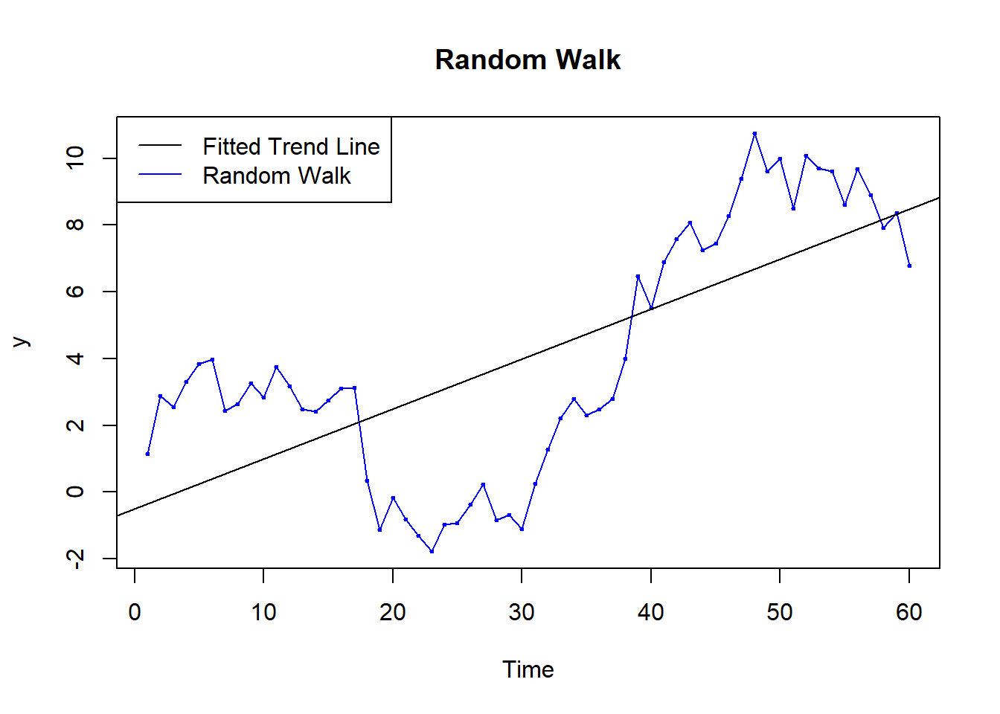
# Load the US population data
data("uspop")
# Fit a quadratic trend to the US population data
model.pop <- lm(uspop~time(uspop)+I(time(uspop)^2))
# Extract the coefficients
coef <- model.pop$coefficients
# Print the summary of the model
summary(model.pop)
Call:
lm(formula = uspop ~ time(uspop) + I(time(uspop)^2))
Residuals:
Min 1Q Median 3Q Max
-6.5997 -0.7105 0.2669 1.4065 3.9879
Coefficients:
Estimate Std. Error t value Pr(>|t|)
(Intercept) 2.045e+04 8.431e+02 24.25 4.81e-14 ***
time(uspop) -2.278e+01 8.974e-01 -25.38 2.36e-14 ***
I(time(uspop)^2) 6.345e-03 2.387e-04 26.58 1.14e-14 ***
---
Signif. codes: 0 '***' 0.001 '**' 0.01 '*' 0.05 '.' 0.1 ' ' 1
Residual standard error: 2.78 on 16 degrees of freedom
Multiple R-squared: 0.9983, Adjusted R-squared: 0.9981
F-statistic: 4645 on 2 and 16 DF, p-value: < 2.2e-16# Plot the US population data
plot(y=uspop,
x=as.vector(time(uspop)),
xlab='Time',
ylab='US population 1790-1970',
type='o',
col = 'blue',
main='US Population 1790-1970')
# Add the fitted quadratic trend line
lines(x=as.vector(time(uspop)),
y=coef[1]+coef[2]*as.vector(time(uspop))+coef[3]*as.vector(time(uspop))^2,
col='red')
# Add the legend
legend('topleft',
legend=c('Fitted Quadratic Trend Line','US Population'),
col=c('red','blue'),
lty=1)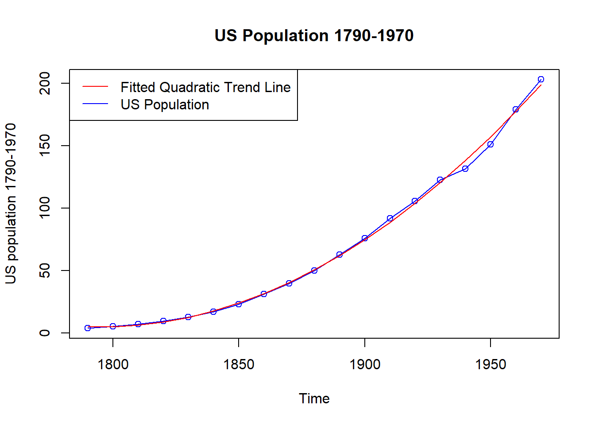
\[ Y_t = \mu_{t} + X_t \] Here, \(\mu_{t}\) is the seasonal mean and \(X_t\) is the seasonal deviation.
\[ \mu_1 = \text{mean for January}, \mu_2 = \text{mean for February}, \ldots, \mu_{12} = \text{mean for December} \]
Dataset: Average monthly temperatures, Dubuque, Iowa.
data("tempdub")
plot(tempdub,
ylab='Temperature',
type='o',
xlab='Time',
main='Average Monthly Temperatures, Dubuque, Iowa')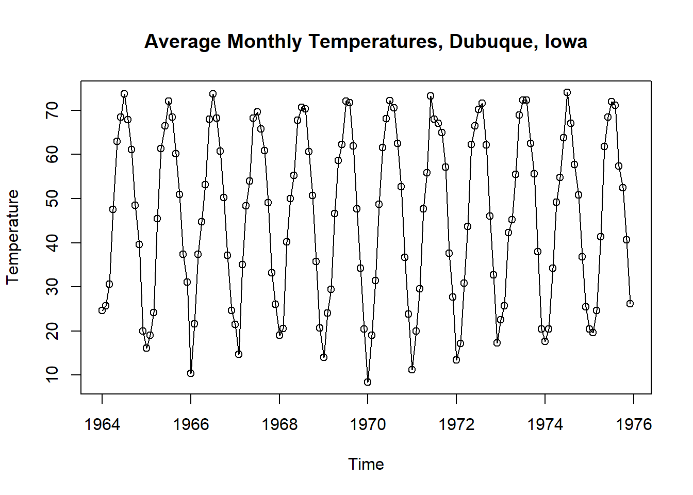
month. <- season(tempdub) # period added to improve table display
model2 <- lm(tempdub ~ month. + 0) # 0 removes the intercept term
#model2 <- lm(tempdub ~ month. - 1) # -1 also removes the intercept term
summary(model2)
Call:
lm(formula = tempdub ~ month. + 0)
Residuals:
Min 1Q Median 3Q Max
-8.2750 -2.2479 0.1125 1.8896 9.8250
Coefficients:
Estimate Std. Error t value Pr(>|t|)
month.January 16.608 0.987 16.83 <2e-16 ***
month.February 20.650 0.987 20.92 <2e-16 ***
month.March 32.475 0.987 32.90 <2e-16 ***
month.April 46.525 0.987 47.14 <2e-16 ***
month.May 58.092 0.987 58.86 <2e-16 ***
month.June 67.500 0.987 68.39 <2e-16 ***
month.July 71.717 0.987 72.66 <2e-16 ***
month.August 69.333 0.987 70.25 <2e-16 ***
month.September 61.025 0.987 61.83 <2e-16 ***
month.October 50.975 0.987 51.65 <2e-16 ***
month.November 36.650 0.987 37.13 <2e-16 ***
month.December 23.642 0.987 23.95 <2e-16 ***
---
Signif. codes: 0 '***' 0.001 '**' 0.01 '*' 0.05 '.' 0.1 ' ' 1
Residual standard error: 3.419 on 132 degrees of freedom
Multiple R-squared: 0.9957, Adjusted R-squared: 0.9953
F-statistic: 2569 on 12 and 132 DF, p-value: < 2.2e-16plot(tempdub,
ylab='Temperature',
type='o',
xlab='Time',
main='Average Monthly Temperatures, Dubuque, Iowa')
points(time(tempdub),fitted(model2), col = "red", type='o')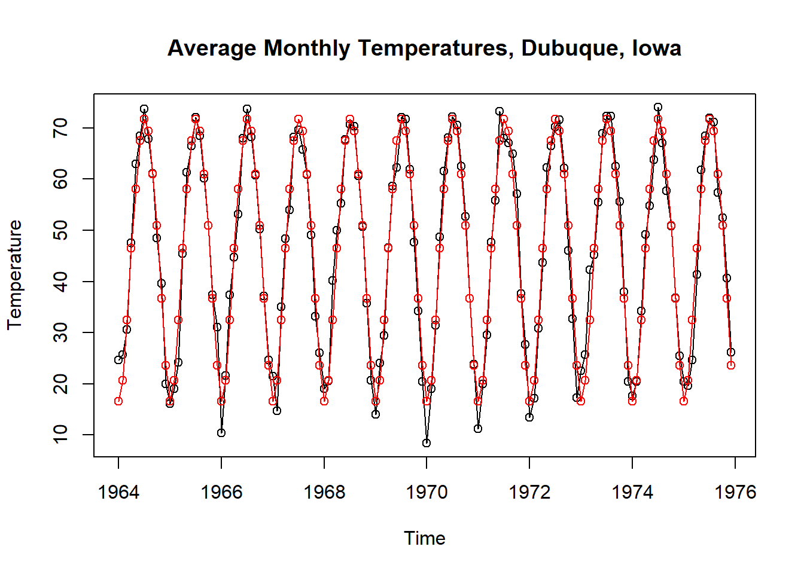
Above, we have \[ \mu_{t} = \beta_{t} \]
model3 <- lm(tempdub ~ month.) # January is dropped automatically
summary(model3)
Call:
lm(formula = tempdub ~ month.)
Residuals:
Min 1Q Median 3Q Max
-8.2750 -2.2479 0.1125 1.8896 9.8250
Coefficients:
Estimate Std. Error t value Pr(>|t|)
(Intercept) 16.608 0.987 16.828 < 2e-16 ***
month.February 4.042 1.396 2.896 0.00443 **
month.March 15.867 1.396 11.368 < 2e-16 ***
month.April 29.917 1.396 21.434 < 2e-16 ***
month.May 41.483 1.396 29.721 < 2e-16 ***
month.June 50.892 1.396 36.461 < 2e-16 ***
month.July 55.108 1.396 39.482 < 2e-16 ***
month.August 52.725 1.396 37.775 < 2e-16 ***
month.September 44.417 1.396 31.822 < 2e-16 ***
month.October 34.367 1.396 24.622 < 2e-16 ***
month.November 20.042 1.396 14.359 < 2e-16 ***
month.December 7.033 1.396 5.039 1.51e-06 ***
---
Signif. codes: 0 '***' 0.001 '**' 0.01 '*' 0.05 '.' 0.1 ' ' 1
Residual standard error: 3.419 on 132 degrees of freedom
Multiple R-squared: 0.9712, Adjusted R-squared: 0.9688
F-statistic: 405.1 on 11 and 132 DF, p-value: < 2.2e-16When we fit with the intercept term, we have \[ \mu_1 = \beta_0,\qquad \mu_{t} = \beta_0 + \beta_{t}, \quad t=2,3,\ldots,12 \]
# Fitting a cosine trend model
har. <- harmonic(tempdub,1)
model4 <- lm(tempdub ~ har.)
summary(model4)
Call:
lm(formula = tempdub ~ har.)
Residuals:
Min 1Q Median 3Q Max
-11.1580 -2.2756 -0.1457 2.3754 11.2671
Coefficients:
Estimate Std. Error t value Pr(>|t|)
(Intercept) 46.2660 0.3088 149.816 < 2e-16 ***
har.cos(2*pi*t) -26.7079 0.4367 -61.154 < 2e-16 ***
har.sin(2*pi*t) -2.1697 0.4367 -4.968 1.93e-06 ***
---
Signif. codes: 0 '***' 0.001 '**' 0.01 '*' 0.05 '.' 0.1 ' ' 1
Residual standard error: 3.706 on 141 degrees of freedom
Multiple R-squared: 0.9639, Adjusted R-squared: 0.9634
F-statistic: 1882 on 2 and 141 DF, p-value: < 2.2e-16# Plot the data and the fitted cosine trend
plot(tempdub,
ylab='Temperature',
type='o',
xlab='Time',
main='Average Monthly Temperatures, Dubuque, Iowa')
points(time(tempdub),fitted(model4),col='red', type='o')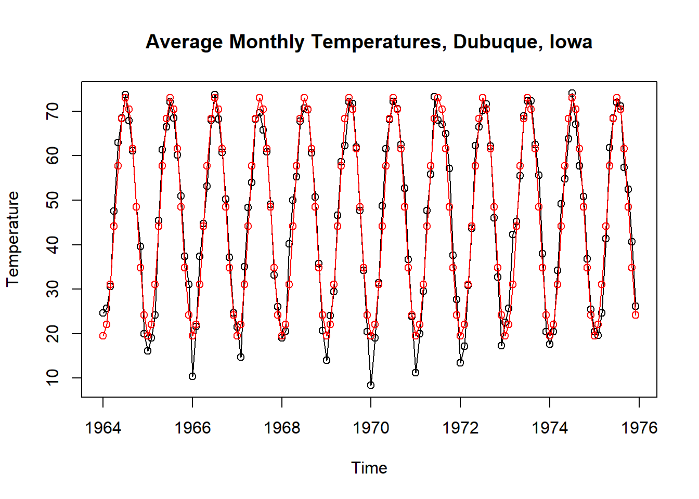
After estimating the trend by \(\hat\mu_t\), we can predict the unobserved values of the stochastic component \(X_t\) by \(\hat{X}_t = Y_t - \hat{\mu}_t\).
plot(y=rstudent(model2),
x=as.vector(time(tempdub)),
xlab='Time',
ylab='Standardized Residuals',
type='o',
main = 'Residuals from Seasonal Means Model w/o Intercept')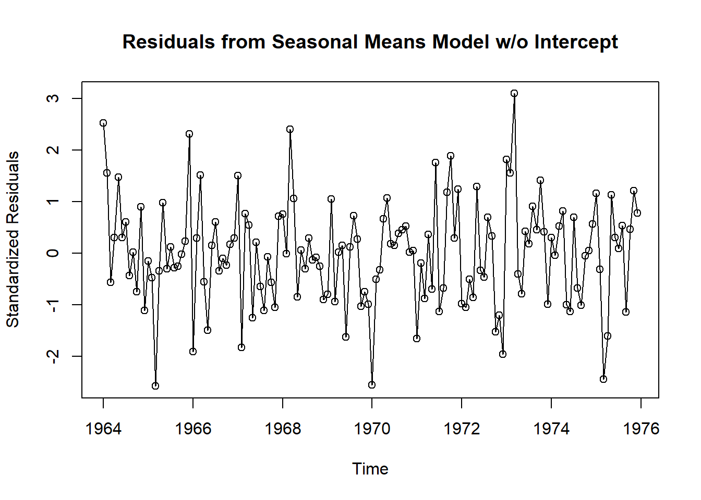
plot(y=rstudent(model3),
x=as.vector(time(tempdub)),
xlab='Time',
ylab='Standardized Residuals',
type='l',
main = 'Residuals from Seasonal Means Model')
points(y=rstudent(model3),
x=as.vector(time(tempdub)),
pch=as.vector(season(tempdub)),
col = 1:4)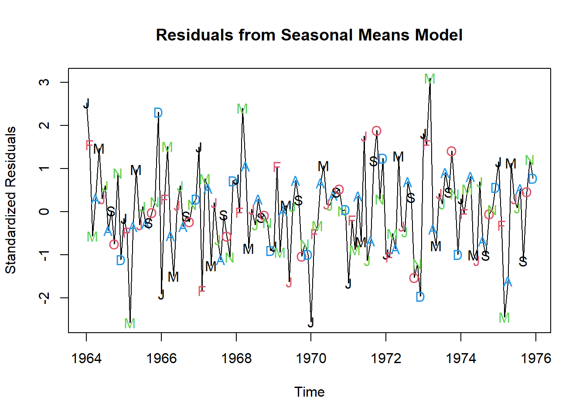
plot(y=rstudent(model3),
x=as.vector(fitted(model3)),
xlab='Fitted Trend Values',
ylab='Standardized Residuals',type='n',
main='Residuals vs Fitted Values from Seasonal Means Model')
points(y=rstudent(model3),
x=as.vector(fitted(model3)),
pch=as.vector(season(tempdub)),
col = 1:4)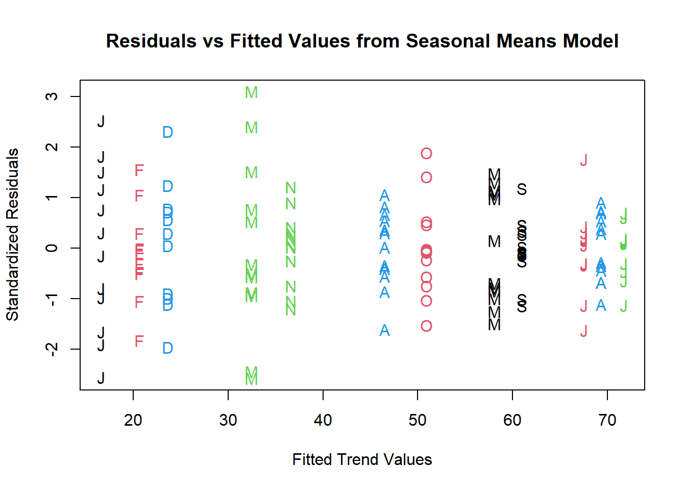
plot(y=rstudent(model4),
x=as.vector(fitted(model4)),
xlab='Fitted Trend Values',
ylab='Standardized Residuals',type='n',
main='Residuals vs Fitted Values from Cosine Trends')
points(y=rstudent(model4),
x=as.vector(fitted(model4)),
pch=as.vector(season(tempdub)),
col = 1:4)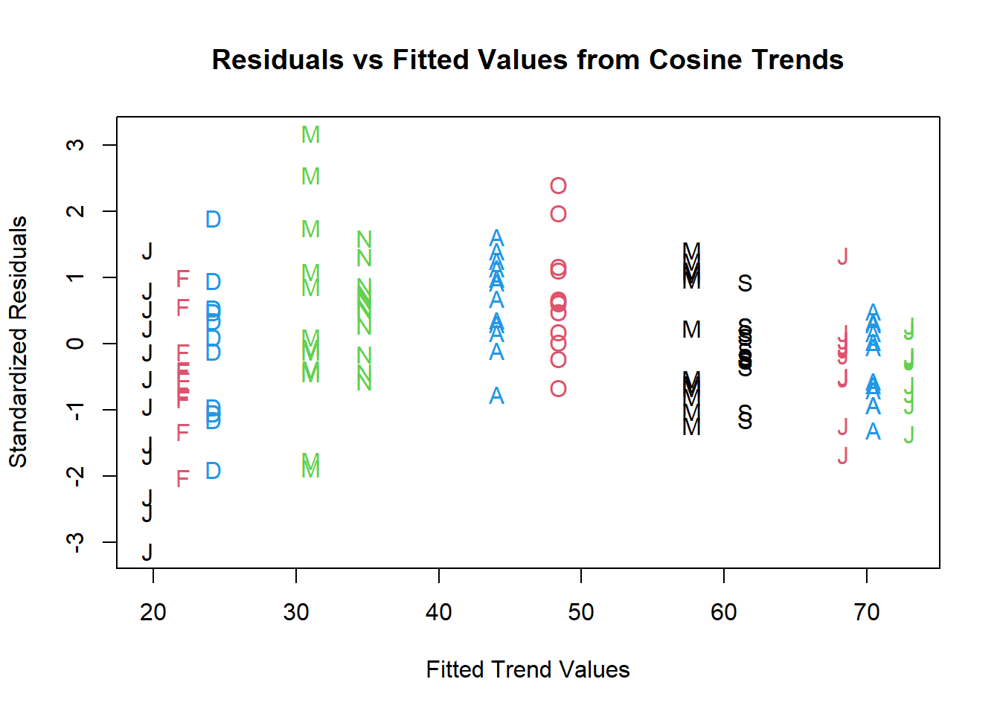
Histogram is a very rough tool to assess normality
hist(rstudent(model3),
xlab='Standardized Residuals',
main='Histogram of Residuals from Seasonal Means Model')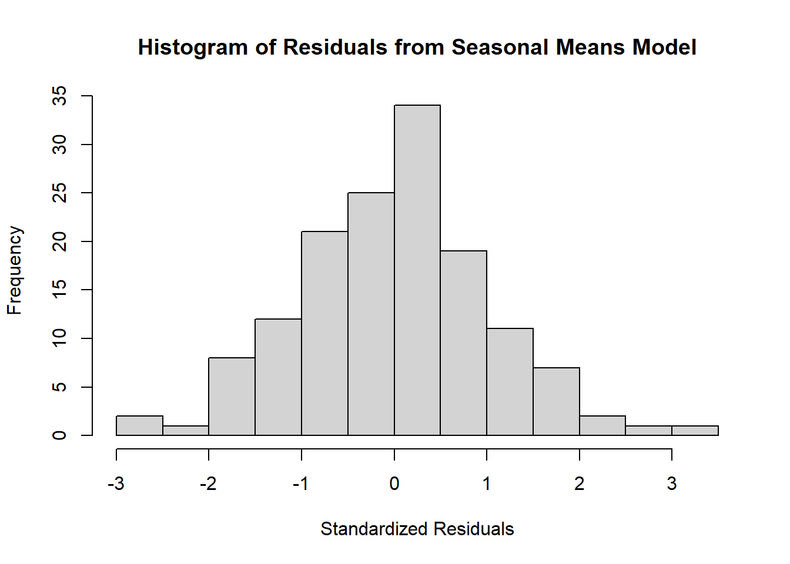
QQ-plot is a much better tool:
# Plotting the QQ-plot
qqnorm(rstudent(model3),
main='QQ-plot of Residuals from Seasonal Means Model')
qqline(rstudent(model3),col='red',lty=2)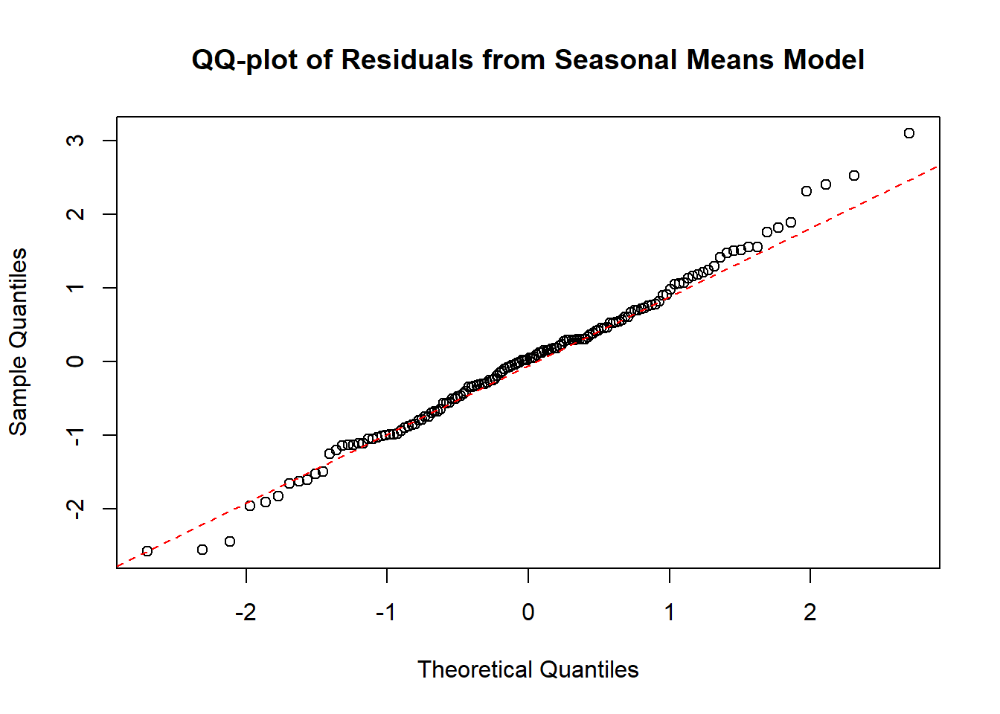
QQ-plot is an excellent visual diagnostic. We can use a Shapiro-Wilk test to assess normality:
# Shapiro-Wilk test for normality. H0: data is normally distributed
shapiro.test(rstudent(model3))
Shapiro-Wilk normality test
data: rstudent(model3)
W = 0.9929, p-value = 0.6954Test for independence: runs test
# Runs test for independence. H0: data is independent
runs(rstudent(model3))$pvalue
[1] 0.216
$observed.runs
[1] 65
$expected.runs
[1] 72.875
$n1
[1] 69
$n2
[1] 75
$k
[1] 0Another tool for assessing dependency is a sample ACF.
Sample autocorrelation function, for \(k=1, 2, 3,\ldots\):
\[ r_k=\dfrac{\sum_{t=k+1}^n(Y_t-\bar{Y})(Y_{t-k}-\bar{Y})}{\sum_{t=1}^n(Y_t-\bar{Y})^2} \]
acf(rstudent(model3),
main='ACF of Residuals from Seasonal Means Model')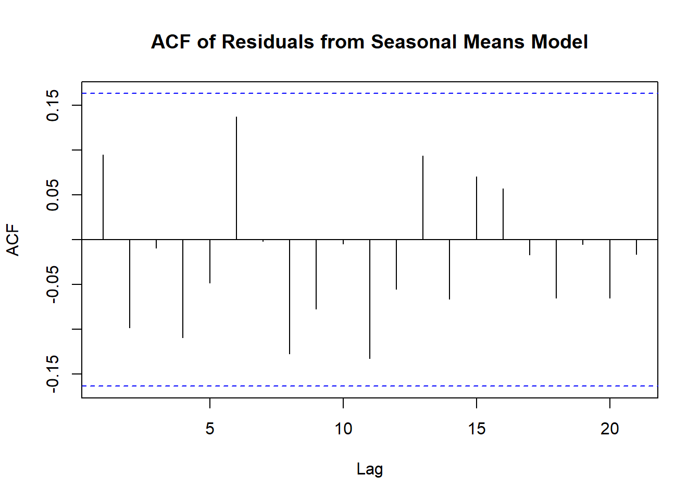
plot(y=rstudent(model1),
x=as.vector(time(rw)),
ylab='Standardized Residuals',
xlab='Time',
type='o',
main='Residuals from Straight Line Fit to Random Walk')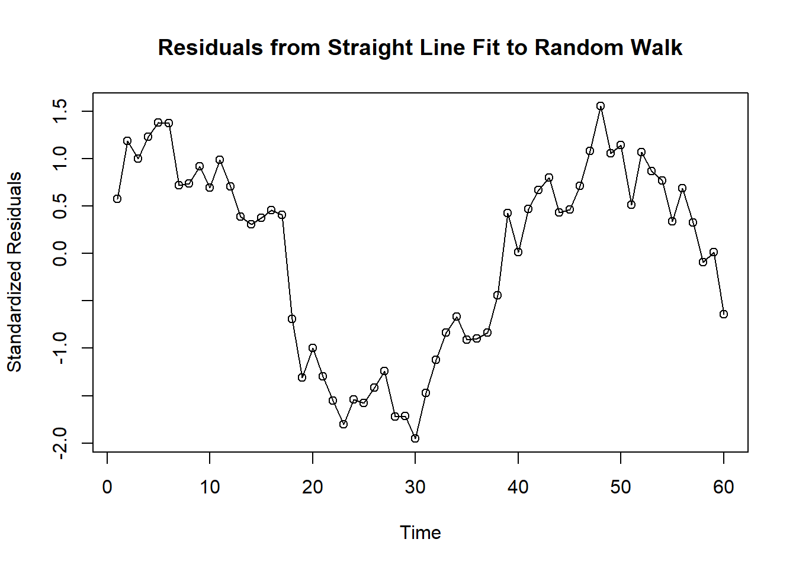
Residuals versus Fitted Values from Straight Line Fit: larger values of residuals correspond to larger fitted values.
plot(y=rstudent(model1),
x=fitted(model1),
ylab='Standardized Residuals',
xlab='Fitted Trend Line Values',
type='p')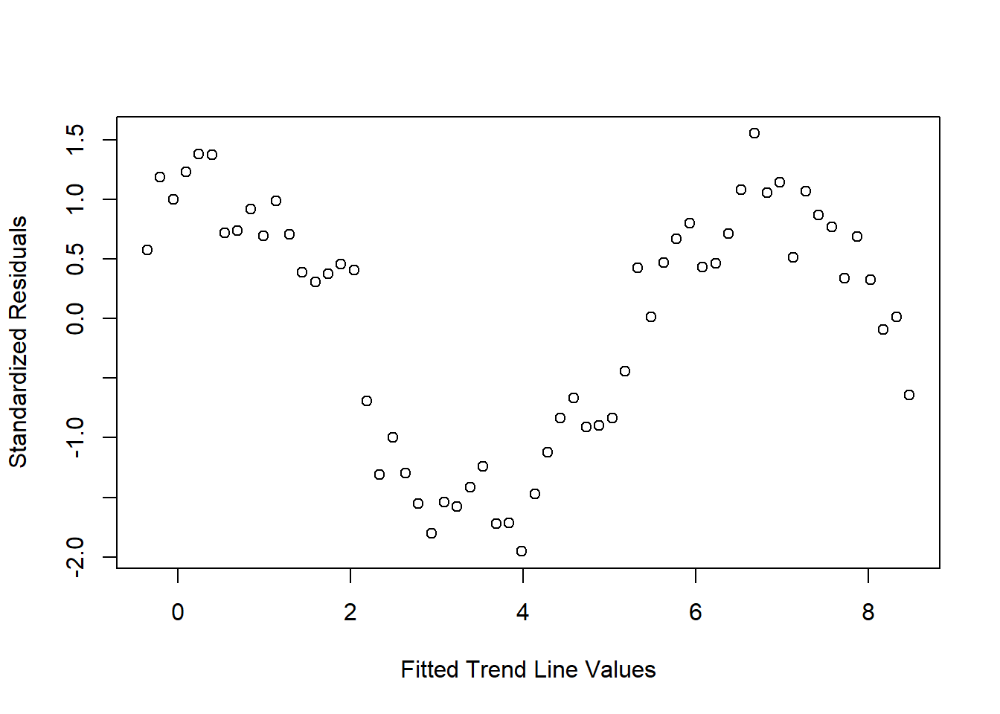
Sample Autocorrelation of Residuals from the Straight Line fit to the random walk
acf(rstudent(model1),
main='ACF of Residuals from Straight Line Fit to Random Walk')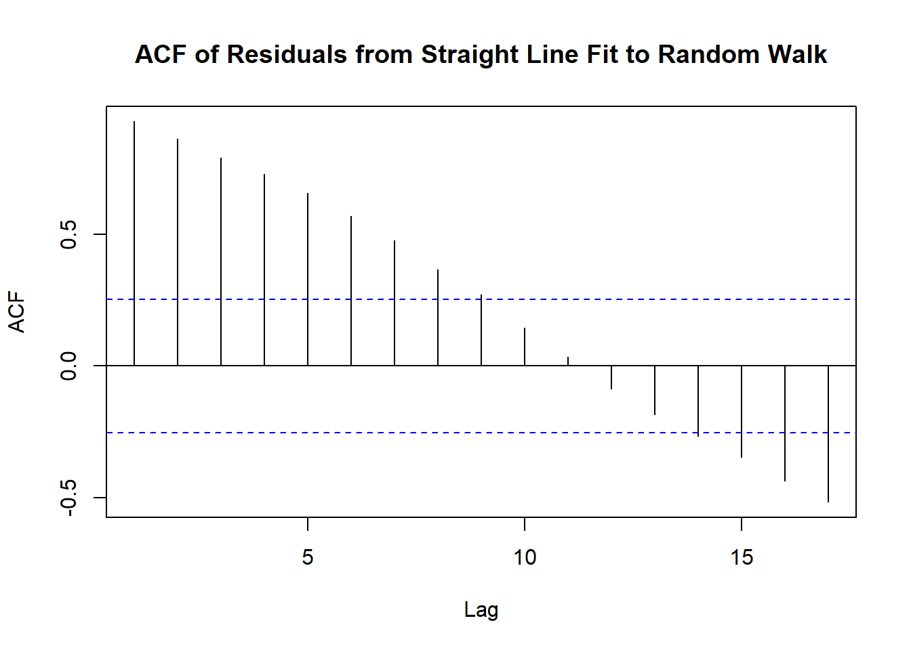
What if we try completely different approach to the random walk data. Let’s difference the data instead and plot the sample ACF of the differenced data?
\[ \nabla Y_t = Y_t-Y_{t-1} \]
acf(diff(rw),
main='ACF of Differenced Random Walk')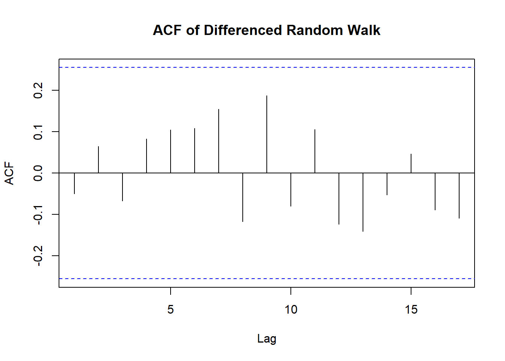
Turns out it’s an iid noise:
data("larain")
acf(larain,
main='ACF of Los Angeles Annual Rainfall Series')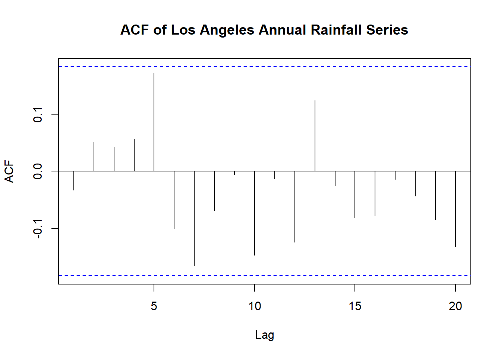
Is it normal? Let’s check the QQ-plot:
qqnorm(larain,
main='QQ-plot of Los Angeles Annual Rainfall Series')
qqline(larain)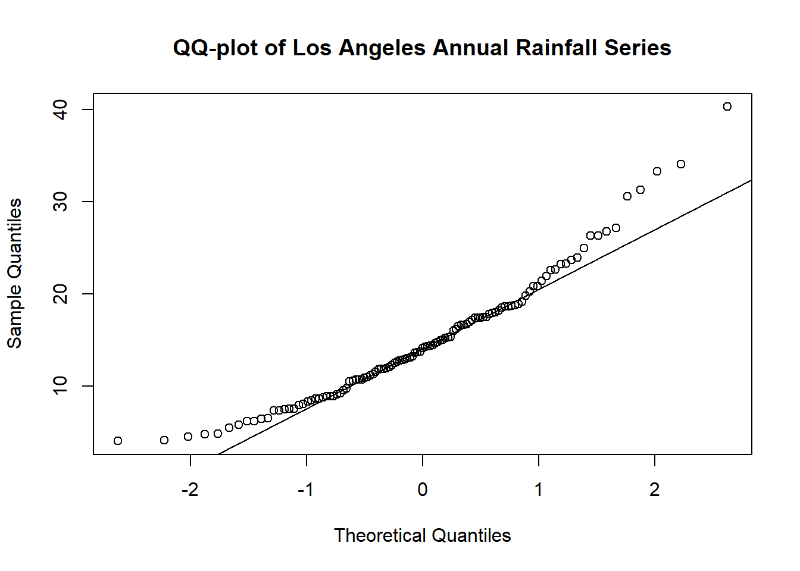
Q: is it left-skewed or right-skewed?
# Shapiro Wilk test
shapiro.test(larain)
Shapiro-Wilk normality test
data: larain
W = 0.94617, p-value = 0.0001614If we log-transform the data, we can see that it becomes more symmetric:
qqnorm(log(larain),
main='QQ-plot of log-transformed Los Angeles Annual Rainfall Series')
qqline(log(larain))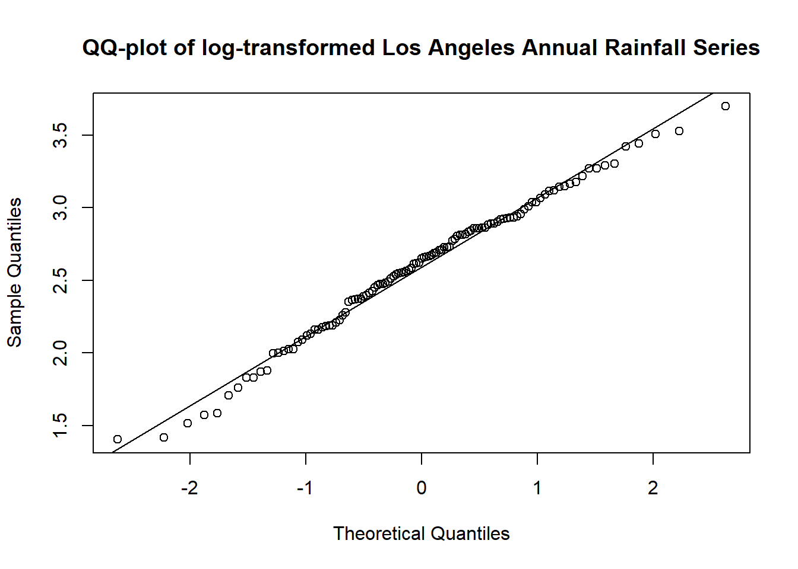
# Shapiro Wilk test
shapiro.test(log(larain))
Shapiro-Wilk normality test
data: log(larain)
W = 0.98742, p-value = 0.3643